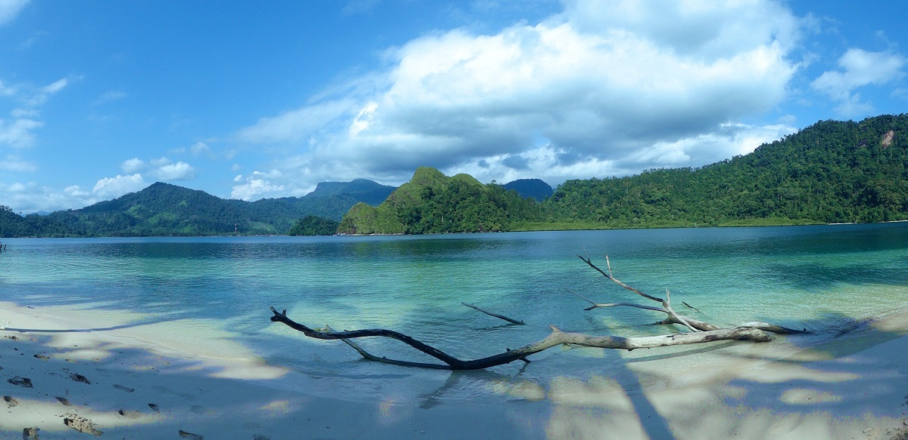
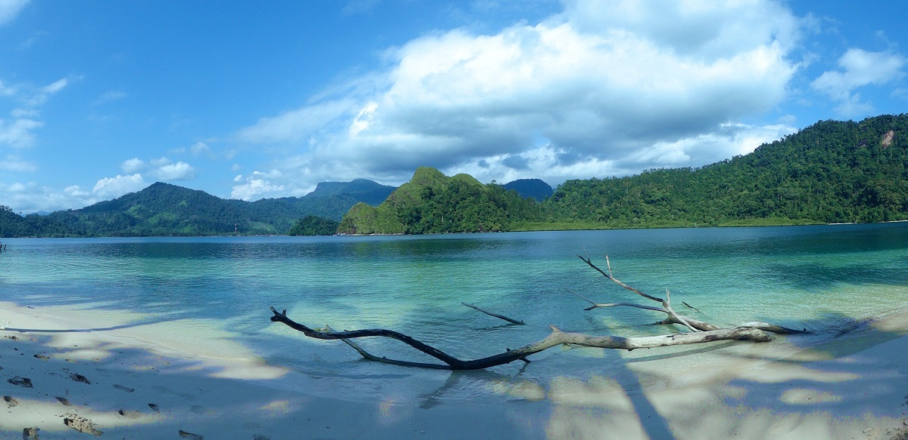
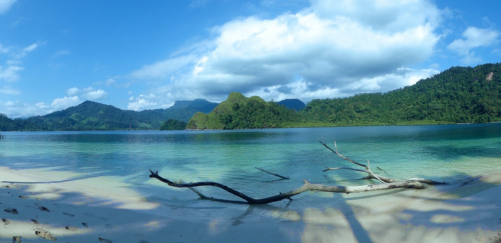
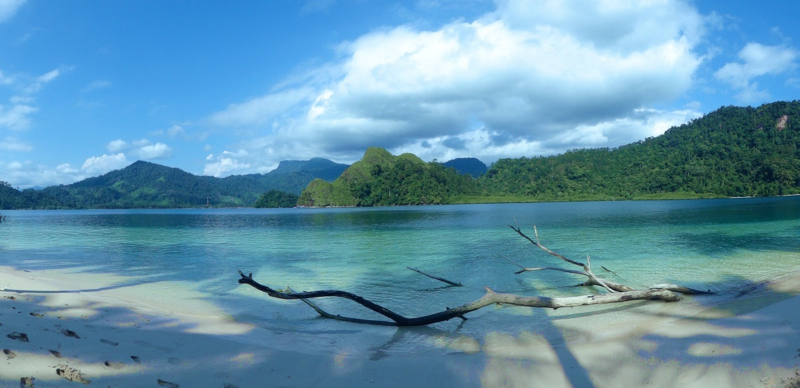

 

Sumatera Barat adalah sebuah provinsi di Indonesia. Di pantai barat pulau Sumatera, provinsi ini memiliki perkiraan populasi tahun 2019 sebesar 5.479.491 dengan luas wilayah 42.012,89 km2. Provinsi tersebut meliputi Kepulauan Mentawai di lepas pantai dan berbatasan dengan provinsi Sumatera Utara di utara, Riau dan Jambi di timur, serta Bengkulu di tenggara. Sumatera Barat dibagi lagi menjadi dua belas kabupaten dan tujuh kota. Provinsi ini memiliki kota yang relatif lebih banyak dibandingkan provinsi lain di luar Jawa. Padang adalah ibu kota provinsi dan kota terbesar.
Sumatera Barat adalah rumah bagi orang Minangkabau, meskipun wilayah adat Minangkabau sebenarnya lebih luas dari batas provinsi, meliputi wilayah selatan Sumatera Utara, wilayah barat Riau, wilayah barat Jambi, wilayah utara Bengkulu, dan Negeri Sembilan di Malaysia. Suku asli lainnya adalah orang Mentawai, yang mendiami pulau barat dengan nama yang sama. Islam adalah agama dominan di provinsi ini dengan sekitar 97,4% dari total populasi.
dibawah ini adalah hal hal yang wajib kamu kunjungi saat berkunjung ke sumatera barat

Selain culture yang beragam, sumatera barat juga memiliki berbagai macam objek wisata yang wajib kalian kunjungi saat di sumatera barat. seperti pantai, panorama, air terjun, danau, dan masih banyak objek wisata lain yang bisa kalian kunjungi. selain itu, udara di sumatera baratumumnya bersuhu rendah, sehingga kalian bisa menikmati liburan kalian bersama keluarga dengan menyenangkan